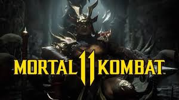
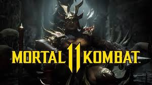

I am not really into stories but the only story i can speak of or say i loved was mortal kombat 11,
These chapter entails alot so am going to summarize it in short and then list the titles of the chapters below
Some time after Shinnok's defeat at the hands of Cassie Cage, Raiden is seen torturing the fallen Elder God in the damaged Jinsei Chamber. The God of Thunder, now with a darker persona due to the Jinsei's corruption, announces to Shinnok that he will no longer have mercy and will destroy Earthrealm's enemies before they can attack the realm. Dark Raiden threatens him, saying that he will be the first. Shinnok reminds him that he can't kill an Elder God, but Dark Raiden states that "There are fates worse than death.", and decapitates him. Dark Raiden informs the severed, yet still-living, head of Shinnok that he will deliver him to Liu Kang in the Netherrealm as a warning, and teleports away.
The Keeper of Time, Kronika, appears in the chamber, annoyed at Raiden for upsetting the balance of time after Mortal Kombat X’s events. She approaches and tells Shinnok that the Ark of Time bends at her will, and that it is only a matter of time.
Here is the official trailer of the movie.I enjoyed am sure you will also😀
Do you think mortal kombat is a nice story?
YESKindly explain briefly why you chose that answer below
If you are already a fan,select the chapter which you liked most.